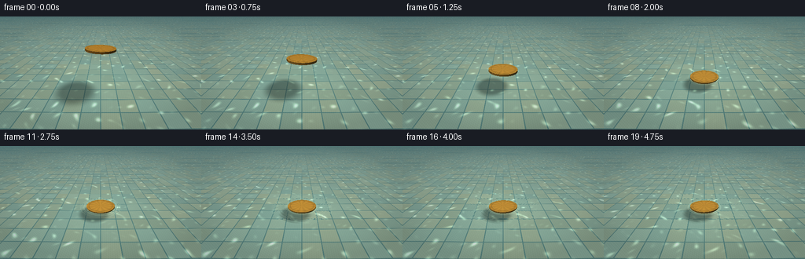
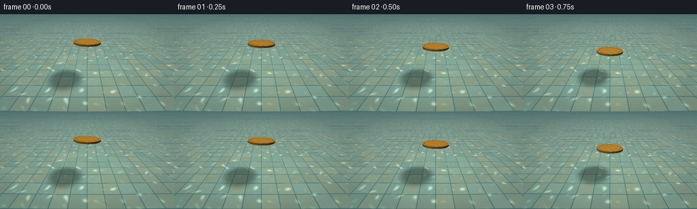

CODING AGENTS AS PIXEL WORLD MODELS
traex/DeepSeek-V4.1-Flash · mechanics_0012
点击播放 · 原生 RGB 像素
此结果可播放，但该运行尚未通过最终提交审核。页面展示不代表评测通过。
逐轮保存的候选
回放视频、检查图与代码变化。
每份候选均可单独播放。实际图片检查记录在下方工具轨迹中。
候选 01播放与检查图
点击播放 · 原生 RGB 像素


展开代码变化
--- 上一保存版本
+++ 本次保存版本
@@ -0,0 +1,425 @@
+"""Procedural render of a coin being gently set onto shallow pool water."""
+
+from pathlib import Path
+
+import numpy as np
+from PIL import Image, ImageFilter
+
+import artifact_io
+
+
+CASE_DIR = Path(__file__).resolve().parent
+OUT_W, OUT_H = 256, 144
+FRAMES, FPS = 20, 4.0
+SS = 2
+W, H = OUT_W * SS, OUT_H * SS
+
+
+def normalize(v, axis=-1):
+ return v / np.maximum(np.linalg.norm(v, axis=axis, keepdims=True), 1e-8)
+
+
+def smoothstep(edge0, edge1, x):
+ t = np.clip((x - edge0) / (edge1 - edge0), 0.0, 1.0)
+ return t * t * (3.0 - 2.0 * t)
+
+
+def mix(a, b, t):
+ t = np.asarray(t)
+ if t.ndim == 2:
+ t = t[..., None]
+ return a * (1.0 - t) + b * t
+
+
+def hash2(ix, iz):
+ v = np.sin(ix * 127.1 + iz * 311.7) * 43758.5453
+ return v - np.floor(v)
+
+
+def make_rays():
+ cam = np.array([0.0, 2.35, -4.35])
+ target = np.array([0.0, 0.17, 0.0])
+ forward = normalize(target - cam)
+ right = normalize(np.cross(np.array([0.0, 1.0, 0.0]), forward))
+ up = normalize(np.cross(forward, right))
+
+ xs = (np.arange(W, dtype=np.float32) + 0.5) / W * 2.0 - 1.0
+ ys = 1.0 - (np.arange(H, dtype=np.float32) + 0.5) / H * 2.0
+ u, v = np.meshgrid(xs, ys)
+ tan_half = np.tan(np.deg2rad(49.0) * 0.5)
+ directions = (
+ forward[None, None, :]
+ + u[..., None] * tan_half * (W / H) * right[None, None, :]
+ + v[..., None] * tan_half * up[None, None, :]
+ )
+ return cam.astype(np.float32), normalize(directions).astype(np.float32)
+
+
+CAM, RAYS = make_rays()
+FLOOR_Y = -0.42
+COIN_R = 0.56
+COIN_T = 0.075
+CONTACT_TIME = 1.92
+
+KEY_DIR = normalize(np.array([-0.58, 1.0, -0.44]))
+SUN_DIR = normalize(np.array([-0.44, 0.76, -0.48]))
+SKY_LOW = np.array([0.22, 0.43, 0.46])
+SKY_HIGH = np.array([0.88, 0.93, 0.86])
+
+
+def coin_center(t):
+ descent = smoothstep(0.0, CONTACT_TIME, t)
+ height = 1.13 * (1.0 - descent)
+ if t > CONTACT_TIME:
+ settle = np.exp(-(t - CONTACT_TIME) * 2.7)
+ height = -0.004 + 0.006 * settle * np.cos((t - CONTACT_TIME) * 13.0)
+ return np.array([0.0, height, 0.0], dtype=np.float32)
+
+
+def coin_rotation(t):
+ settle = smoothstep(CONTACT_TIME - 0.08, CONTACT_TIME + 0.7, t)
+ rx = np.deg2rad(2.2 + 1.1 * np.sin(t * 1.7))
+ rz = np.deg2rad(-1.4 + 2.0 * settle)
+ cx, sx = np.cos(rx), np.sin(rx)
+ cz, sz = np.cos(rz), np.sin(rz)
+ rot_x = np.array([[1, 0, 0], [0, cx, -sx], [0, sx, cx]], np.float32)
+ rot_z = np.array([[cz, -sz, 0], [sz, cz, 0], [0, 0, 1]], np.float32)
+ return rot_z @ rot_x
+
+
+def ripple_height(x, z, t, center):
+ r = np.sqrt(x * x + z * z) + 1e-6
+ height = np.zeros_like(x, dtype=np.float32)
+
+ # A small meniscus appears when the rim first touches the water.
+ contact = smoothstep(CONTACT_TIME - 0.03, CONTACT_TIME + 0.12, t)
+ if contact > 0.0:
+ ring = (r - COIN_R) / 0.035
+ height += contact * (
+ 0.0105 * np.exp(-ring * ring)
+ - 0.0060 * np.exp(-((r - COIN_R - 0.065) / 0.045) ** 2)
+ )
+
+ # Two low wave packets keep the circular disturbance irregular but calm.
+ for start, amp, speed, wavelength, decay in (
+ (CONTACT_TIME + 0.01, 0.0090, 0.50, 0.115, 0.58),
+ (CONTACT_TIME + 0.13, 0.0045, 0.39, 0.155, 0.72),
+ ):
+ age = t - start
+ if age <= 0.0:
+ continue
+ front = speed * age + COIN_R * 0.72
+ inside = smoothstep(front + 0.045, front - 0.045, r)
+ train = np.sin((r - front) * (2.0 * np.pi / wavelength))
+ envelope = np.exp(-0.62 * r) * np.exp(-decay * age)
+ height += amp * inside * train * envelope
+
+ # Barely perceptible ambient motion gives the surface life before contact.
+ ambient = 0.00055 * np.sin(9.0 * x + 0.22 * t) * np.sin(11.0 * z - 0.17 * t)
+ height += ambient * (1.0 - contact)
+
+ # Slight depression directly beneath the approaching coin.
+ if center[1] > 0.01:
+ shadow_well = 0.0014 * np.exp(-(r / 0.22) ** 2)
+ height -= shadow_well * (1.0 - smoothstep(0.02, 0.25, center[1]))
+ return height
+
+
+def ripple_normal(x, z, t, center):
+ eps = 0.006
+ h = ripple_height(x, z, t, center)
+ hx = (ripple_height(x + eps, z, t, center) - ripple_height(x - eps, z, t, center)) / (2 * eps)
+ hz = (ripple_height(x, z + eps, t, center) - ripple_height(x, z - eps, t, center)) / (2 * eps)
+ return normalize(np.stack((-hx, np.ones_like(h), -hz), axis=-1)), h
+
+
+def water_intersection(t, center):
+ with np.errstate(divide="ignore", invalid="ignore"):
+ distance = -CAM[1] / RAYS[..., 1]
+ for _ in range(2):
+ p = CAM[None, None, :] + distance[..., None] * RAYS
+ height = ripple_height(p[..., 0], p[..., 2], t, center)
+ distance = (height - CAM[1]) / RAYS[..., 1]
+ p = CAM[None, None, :] + distance[..., None] * RAYS
+ return p, distance
+
+
+def tile_floor(x, z, t, coin_pos, water_h, normal):
+ tile = 0.56
+ gx = x / tile
+ gz = z / tile
+ ix = np.floor(gx)
+ iz = np.floor(gz)
+ fx = gx - ix
+ fz = gz - iz
+
+ edge = np.minimum(np.minimum(fx, 1.0 - fx), np.minimum(fz, 1.0 - fz))
+ grout = smoothstep(0.018, 0.035, edge)
+ variation = hash2(ix, iz)
+
+ cool = np.stack(
+ (
+ 0.52 + 0.08 * variation,
+ 0.68 + 0.07 * variation,
+ 0.66 + 0.05 * variation,
+ ),
+ axis=-1,
+ )
+ warm = np.stack(
+ (
+ 0.68 + 0.06 * variation,
+ 0.70 + 0.05 * variation,
+ 0.58 + 0.04 * variation,
+ ),
+ axis=-1,
+ )
+ tile_mix = (0.35 + 0.65 * hash2(ix + 7.3, iz - 4.1))[..., None]
+ color = cool * (1.0 - tile_mix) + warm * tile_mix
+
+ grout_color = np.array([0.38, 0.54, 0.53])
+ color = color * grout[..., None] + grout_color * (1.0 - grout[..., None])
+
+ # Fine stone speckle, sampled at a scale small enough to read as texture.
+ speck = 0.018 * np.sin(91.0 * x + 47.0 * z) * np.sin(53.0 * z - 19.0 * x)
+ color += speck[..., None]
+
+ # Ripple-refracted caustics form a loose, animated net on the pool floor.
+ warp_x = x + 0.035 * normal[..., 0]
+ warp_z = z + 0.035 * normal[..., 2]
+ c1 = np.sin(10.7 * warp_x + 2.6 * np.sin(6.0 * warp_z + 0.55 * t))
+ c2 = np.sin(9.3 * warp_z - 2.2 * np.sin(5.1 * warp_x - 0.42 * t))
+ c3 = np.sin(6.2 * (warp_x + warp_z) + 1.7 * np.sin(4.4 * (warp_x - warp_z)))
+ caustic = np.clip((c1 + c2 + c3) / 3.0, 0.0, 1.0) ** 5
+ caustic += 0.35 * np.clip((c1 * c2 + c3) * 0.5, 0.0, 1.0) ** 6
+ color += caustic[..., None] * np.array([0.34, 0.39, 0.30])
+
+ # Soft projected coin shadow. It tightens as the coin approaches the water.
+ light_to_floor = normalize(np.array([0.58, -1.0, 0.44]))
+ travel = (FLOOR_Y - coin_pos[1]) / light_to_floor[1]
+ qx = x + travel * light_to_floor[0]
+ qz = z + travel * light_to_floor[2]
+ qr = np.sqrt(qx * qx + qz * qz)
+ blur = 0.13 + 0.20 * smoothstep(0.0, 1.1, coin_pos[1])
+ shadow = 1.0 - 0.40 * (1.0 - smoothstep(COIN_R * 0.75, COIN_R + blur, qr))
+ color *= shadow[..., None]
+
+ # The shallow water absorbs a little red and adds a cool veil.
+ depth_tint = np.array([0.86, 0.96, 0.96])
+ color *= depth_tint
+ return np.clip(color, 0.0, 1.0)
+
+
+def environment(direction):
+ up = np.clip(direction[..., 1], 0.0, 1.0)
+ sky = mix(SKY_LOW, SKY_HIGH, np.sqrt(up))
+ sun = np.maximum(np.sum(direction * SUN_DIR, axis=-1), 0.0)
+ sky += (sun ** 260)[..., None] * np.array([1.8, 1.55, 1.05])
+ sky += (sun ** 18)[..., None] * np.array([0.08, 0.09, 0.075])
+ return sky
+
+
+def intersect_coin(t):
+ center = coin_center(t)
+ rot = coin_rotation(t)
+ origin = rot.T @ (CAM - center)
+ direction = RAYS @ rot
+ ox, oy, oz = origin
+ dx, dy, dz = direction[..., 0], direction[..., 1], direction[..., 2]
+
+ best_t = np.full((H, W), np.inf, dtype=np.float32)
+ best_normal = np.zeros((H, W, 3), dtype=np.float32)
+ best_local = np.zeros((H, W, 3), dtype=np.float32)
+ face = np.zeros((H, W), dtype=np.uint8)
+
+ half = COIN_T * 0.5
+ for cap_sign, face_id in ((1.0, 1), (-1.0, 2)):
+ with np.errstate(divide="ignore", invalid="ignore"):
+ hit_t = (cap_sign * half - oy) / dy
+ hx = ox + hit_t * dx
+ hz = oz + hit_t * dz
+ valid = (
+ (hit_t > 1e-4)
+ & (hit_t < best_t)
+ & (hx * hx + hz * hz <= COIN_R * COIN_R)
+ )
+ best_t = np.where(valid, hit_t, best_t)
+ normal_local = np.zeros((H, W, 3), dtype=np.float32)
+ normal_local[..., 1] = cap_sign
+ best_normal = np.where(valid[..., None], normal_local, best_normal)
+ local = np.stack((hx, np.full_like(hx, cap_sign * half), hz), axis=-1)
+ best_local = np.where(valid[..., None], local, best_local)
+ face = np.where(valid, face_id, face)
+
+ a = dx * dx + dz * dz
+ b = 2.0 * (ox * dx + oz * dz)
+ c = ox * ox + oz * oz - COIN_R * COIN_R
+ disc = b * b - 4.0 * a * c
+ root = np.sqrt(np.maximum(disc, 0.0))
+ for side_t in ((-b - root) / (2.0 * a), (-b + root) / (2.0 * a)):
+ hy = oy + side_t * dy
+ hx = ox + side_t * dx
+ hz = oz + side_t * dz
+ valid = (
+ (disc >= 0.0)
+ & (side_t > 1e-4)
+ & (side_t < best_t)
+ & (np.abs(hy) <= half)
+ )
+ best_t = np.where(valid, side_t, best_t)
+ normal_local = np.stack((hx / COIN_R, np.zeros_like(hx), hz / COIN_R), axis=-1)
+ best_normal = np.where(valid[..., None], normal_local, best_normal)
+ local = np.stack((hx, hy, hz), axis=-1)
+ best_local = np.where(valid[..., None], local, best_local)
+ face = np.where(valid, 3, face)
+
+ normal_world = best_normal @ rot.T
+ return best_t, normalize(normal_world), best_local, face
+
+
+def relief_height(x, z):
+ r = np.sqrt(x * x + z * z) / COIN_R
+ theta = np.arctan2(z, x)
+ h = np.zeros_like(r)
+
+ # Raised outer lettering rings and a finely reeded rim.
+ for radius, amp, width in ((0.84, 0.0038, 0.016), (0.71, 0.0020, 0.012)):
+ h += amp * np.exp(-((r - radius) / width) ** 2)
+ rim = smoothstep(0.88, 0.92, r)
+ h += rim * 0.0015 * np.cos(theta * 96.0)
+
+ # A compact sunburst medallion in the middle.
+ medallion = smoothstep(0.57, 0.50, r)
+ rays = 0.5 + 0.5 * np.cos(theta * 12.0 + 0.55 * np.sin(theta * 3.0))
+ h += medallion * (0.0008 + 0.0016 * rays) * (0.45 + 0.55 * smoothstep(0.10, 0.48, r))
+ h += 0.0028 * np.exp(-((r - 0.16) / 0.025) ** 2)
+ h -= 0.0009 * smoothstep(0.43, 0.50, r) * smoothstep(0.57, 0.50, r)
+ return h
+
+
+def shade_coin(t, coin_t, coin_normal, local, face):
+ x, y, z = local[..., 0], local[..., 1], local[..., 2]
+ r = np.sqrt(x * x + z * z) / COIN_R
+ theta = np.arctan2(z, x)
+
+ top = face == 1
+ side = face == 3
+ normal = coin_normal
+
+ eps = 0.006
+ if np.any(top):
+ h0 = relief_height(x, z)
+ hx = (relief_height(x + eps, z) - relief_height(x - eps, z)) / (2.0 * eps)
+ hz = (relief_height(x, z + eps) - relief_height(x, z - eps)) / (2.0 * eps)
+ relief_normal = normalize(np.stack((-hx, np.ones_like(h0), -hz), axis=-1))
+ rot = coin_rotation(t)
+ relief_normal = relief_normal @ rot.T
+ normal = np.where(top[..., None], relief_normal, normal)
+
+ view = -RAYS
+ diffuse = np.maximum(np.sum(normal * KEY_DIR, axis=-1), 0.0)
+ half_vector = normalize(KEY_DIR[None, None, :] + view)
+ spec = np.maximum(np.sum(normal * half_vector, axis=-1), 0.0) ** 72.0
+ reflected = RAYS - 2.0 * np.sum(RAYS * normal, axis=-1, keepdims=True) * normal
+ env = environment(reflected)
+
+ gold = np.array([0.92, 0.61, 0.20])
+ deep_gold = np.array([0.47, 0.25, 0.065])
+ color = gold * (0.23 + 0.72 * diffuse[..., None])
+ color += env * gold * 0.17
+ color += np.array([1.0, 0.86, 0.56]) * (spec * 1.65)[..., None]
+
+ # Etched color breaks and edge wear make the metal read as a struck coin.
+ etch = 0.5 + 0.5 * np.cos(theta * 12.0 + 0.55 * np.sin(theta * 3.0))
+ top_detail = (0.92 + 0.08 * etch) * (1.0 - 0.13 * smoothstep(0.74, 0.83, r))
+ color *= np.where(top[..., None], top_detail[..., None], 1.0)
+ color = np.where(side[..., None], color * 0.73, color)
+
+ side_stripes = 0.80 + 0.20 * np.cos(theta * 132.0)
+ color = np.where(side[..., None], color * side_stripes[..., None], color)
+ edge_light = smoothstep(0.79, 0.98, r)
+ color += np.where(top[..., None], edge_light[..., None] * np.array([0.10, 0.065, 0.018]), 0.0)
+
+ # Contact darkening and a faint warm bounce at the lower rim.
+ contact = smoothstep(CONTACT_TIME - 0.15, CONTACT_TIME + 0.2, t)
+ color *= 1.0 - 0.13 * contact * smoothstep(0.90, 1.0, r)[..., None]
+ color = np.where(side[..., None], color * 0.85 + deep_gold * 0.15, color)
+ return np.clip(color, 0.0, 2.0)
+
+
+def render(t):
+ center = coin_center(t)
+ water_p, water_t = water_intersection(t, center)
+ surface_normal, wave_h = ripple_normal(water_p[..., 0], water_p[..., 2], t, center)
+
+ view_dot_n = np.clip(-np.sum(RAYS * surface_normal, axis=-1), 0.0, 1.0)
+ fresnel = 0.018 + 0.982 * (1.0 - view_dot_n) ** 5
+ reflected = RAYS - 2.0 * np.sum(RAYS * surface_normal, axis=-1, keepdims=True) * surface_normal
+ sky = environment(reflected)
+
+ eta = 1.0 / 1.333
+ cos_i = -np.sum(RAYS * surface_normal, axis=-1, keepdims=True)
+ sin_t2 = eta * eta * np.maximum(0.0, 1.0 - cos_i * cos_i)
+ cos_t = np.sqrt(np.maximum(0.0, 1.0 - sin_t2))
+ refracted = normalize(eta * RAYS + (eta * cos_i - cos_t) * surface_normal)
+ floor_t = (FLOOR_Y - water_p[..., 1]) / refracted[..., 1]
+ floor_p = water_p + refracted * floor_t[..., None]
+ floor_color = tile_floor(floor_p[..., 0], floor_p[..., 2], t, center, wave_h, surface_normal)
+
+ key_half = normalize(KEY_DIR + (-RAYS))
+ water_spec = np.maximum(np.sum(surface_normal * key_half, axis=-1), 0.0) ** 210.0
+ ripple_glint = np.clip(np.abs(wave_h) / 0.0065, 0.0, 1.0) * smoothstep(CONTACT_TIME, CONTACT_TIME + 0.18, t)
+ water = floor_color * (1.0 - fresnel[..., None]) + sky * fresnel[..., None]
+ water += water_spec[..., None] * np.array([1.0, 0.93, 0.72]) * 0.55
+ water += ripple_glint[..., None] * np.array([0.10, 0.105, 0.075])
+
+ coin_t, coin_normal, local, face = intersect_coin(t)
+ coin_color = shade_coin(t, coin_t, coin_normal, local, face)
+ coin_mask = coin_t < water_t
+ color = np.where(coin_mask[..., None], coin_color, water)
+
+ # A delicate contact halo travels just outside the rim.
+ contact = smoothstep(CONTACT_TIME - 0.02, CONTACT_TIME + 0.1, t)
+ world_radius = np.sqrt(water_p[..., 0] ** 2 + water_p[..., 2] ** 2)
+ halo = np.exp(-((world_radius - COIN_R - 0.022) / 0.018) ** 2)
+ color += halo[..., None] * contact * np.array([0.12, 0.105, 0.06]) * (~coin_mask[..., None])
+
+ # Gentle underwater glow and a warm key-light bloom.
+ distance_from_center = (water_p[..., 0] ** 2 + (water_p[..., 2] * 0.7) ** 2) / 2.8
+ color += np.exp(-distance_from_center)[..., None] * np.array([0.025, 0.045, 0.035])
+ color = color / (1.0 + 0.16 * color)
+ return np.clip(color, 0.0, 1.0).astype(np.float32)
+
+
+def finish(frame):
+ image = Image.fromarray(np.uint8(np.clip(frame, 0.0, 1.0) * 255.0 + 0.5), "RGB")
+ image = image.resize((OUT_W, OUT_H), Image.Resampling.LANCZOS)
+
+ array = np.asarray(image).astype(np.float32) / 255.0
+ yy, xx = np.mgrid[0:OUT_H, 0:OUT_W]
+ nx = (xx - OUT_W * 0.5) / (OUT_W * 0.5)
+ ny = (yy - OUT_H * 0.5) / (OUT_H * 0.5)
+ vignette = 1.0 - 0.12 * np.clip(nx * nx * 0.75 + ny * ny, 0.0, 1.0) ** 1.35
+ array *= vignette[..., None]
+
+ # Very small highlight bloom keeps the metal and ripple glints crisp.
+ lum = np.max(array, axis=-1, keepdims=True)
+ highlights = np.clip((lum - 0.72) / 0.28, 0.0, 1.0) * array
+ glow = Image.fromarray(np.uint8(np.clip(highlights, 0, 1) * 255), "RGB").filter(
+ ImageFilter.GaussianBlur(1.35)
+ )
+ array += np.asarray(glow).astype(np.float32) / 255.0 * 0.10
+ return np.uint8(np.clip(array, 0.0, 1.0) * 255.0 + 0.5)
+
+
+def main():
+ frames = []
+ for index in range(FRAMES):
+ t = index / FPS
+ print(f"rendering frame {index + 1:02d}/{FRAMES} t={t:.2f}s", flush=True)
+ frames.append(finish(render(t)))
+ artifact_io.save(np.stack(frames), CASE_DIR)
+ print("saved frames, inspection sheets, and interactive RGB player")
+
+
+if __name__ == "__main__":
+ main()
可观测工具轨迹
实际执行的命令与返回图片。
命令 1exit 0
/bin/bash -c "pwd && rg --files -g '"'!*__pycache__*'"' | sort"
命令 2exit 0
/bin/bash -c 'git status --short --branch'
命令 3exit 0
/bin/bash -c 'cat GENERATION_RULES.md'
命令 4exit 0
/bin/bash -c 'cat task_spec.json'
命令 5exit 0
/bin/bash -c 'cat prompt.txt'
命令 6exit 0
/bin/bash -c "sed -n '1,260p' artifact_io.py"
命令 7exit 0
/bin/bash -c "sed -n '1,260p' player_template.html"
命令 8exit 0
/bin/bash -c 'python generate.py'
保存候选 1 份；完成命令 8 次；可验证图片返回 0 张。原始 API 响应与完整日志保留在本地。